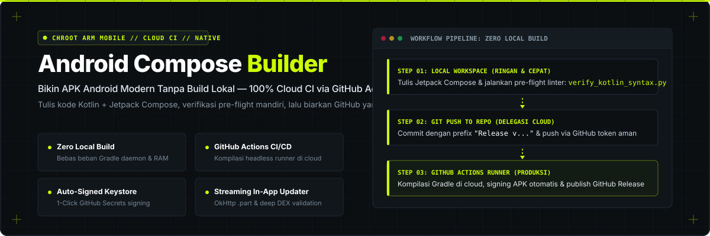

Pengembangan Android Jetpack Compose di Lingkungan Terbatas
Spesifikasi rekayasa untuk AI coding agent yang bekerja di dalam chroot mobile ARM. Dirancang untuk menghapus kewajiban build Gradle lokal yang memicu kehabisan RAM atau thermal throttling, mengunci kesepakatan desain ke berkas persisten di disk, dan mencegah fitur setengah jadi.
curl -fsSL https://raw.githubusercontent.com/arbdevai/android-compose-builder/main/install.sh | bash

1. Aturan Emas Operasional
Aturan absolut yang wajib dipatuhi agen di setiap sesi pengerjaan.
Dilarang menjalankan perintah ./gradlew assembleRelease di lingkungan lokal. Menjalankan kompilasi Gradle lokal di HP akan menghabiskan RAM 4–8 GB dan memicu OOM-kill. Seluruh proses pembuatan biner APK diserahkan ke cloud runner GitHub Actions.
Dilarang meninggalkan komentar // TODO, stub fungsi kosong, atau mock palsu. Setiap fitur yang dikerjakan wajib diselesaikan vertikal penuh: dari DTO/Data layer, State Management ViewModel (StateFlow), hingga Jetpack Compose Screen sebelum pekerjaan dinyatakan tuntas.
Dilarang menggunakan elemen dekorasi norak: dilarang pulsing dot, glowing neon, dan teks berjalan (marquee). Dilarang menggunakan emoji di seluruh antarmuka aplikasi, teks string, maupun pesan commit Git. Wajib menggunakan Material3 Vector Icons resmi.
2. Penanganan Kelelahan Konteks & Amnesia Sesi Baru
Mengapa AI sering mengulang bug lama atau mengabaikan instruksi saat sesi chat memanjang, dan bagaimana skill ini menyelesaikannya.
Penyebab Degradasi Konteks:
- Lost in the Middle: Atensi Transformer terfokus di awal dan akhir prompt; diskusi teknis di tengah percakapan memudar.
- Polusi Log: Timbunan error stack trace dan obrolan panjang menurunkan rasio Signal-to-Noise.
- Sifat Stateless: Setiap sesi chat baru dimulai dari memori nol. Tanpa berkas persisten di disk, seluruh riwayat diskusi hilang.
Solusi Disk-First State Management:
- docs/PRD.md: Mengunci kontrak kebutuhan, SDK target, arsitektur, dan batasan teknis aplikasi.
- docs/STATE.md: Mencatat checkpoint aktif, daftar fitur selesai, dan catatan bug serta solusinya agar tidak diulangi lagi.
- Bootstrap Wajib: Di setiap sesi baru, AI wajib membaca kedua file di disk tersebut sebelum bertindak.
3. Blueprint Tata Letak Compose (Anti-UI Berantakan)
Mencegah layout tertutup keyboard virtual atau terpotong notch/status bar di layar HP.
@Composable
fun FormScreen(viewModel: FormViewModel) {
Scaffold(
contentWindowInsets = WindowInsets.safeDrawing
) { innerPadding ->
Column(
modifier = Modifier
.fillMaxSize()
.padding(innerPadding) // Wajib konsumsi padding scaffold
.imePadding() // Otomatis mengangkat form saat keyboard virtual muncul
.verticalScroll(rememberScrollState())
) {
// Konten form / input data produksi
}
}
}
4. Matriks Modul Referensi (references/)
Panduan teknis terpisah yang dibaca oleh agen secara spesifik saat menangani domain tertentu.
Wawancara PRD interaktif, manajemen memori docs/STATE.md, layout scaffolding, dan self-healing validator.
CMake NDK, ABI filters (arm64-v8a), JNI memory safety, dan toolchain Rust via cargo-ndk / UniFFI.
Modifier.shimmerEffect() murni, keyboard IME handling, Material3 Vector Icons, dan kamus microcopy profesional.
Direct streaming OkHttp ke file .part, atomic rename, dan verifikasi integritas DEX 4-lapis.
GitHub Actions headless runner, formula SemVer numerik, changelog otomatis dari git, dan release keystore.
Otentikasi atomik Mutex.withLock, pembatasan Semaphore anti-deadlock, dan printer thermal POS ESC/POS.
5. Perbandingan Efisiensi Lingkungan
Dampak pada perangkat ARM chroot mobile.
| Parameter | Kompilasi Lokal Konvensional | Skill android-compose-builder |
|---|---|---|
| Beban Memori RAM HP | 4 – 8 GB (Rentan OOM-Kill di chroot) | < 50 MB (Hanya teks editor & validator Python) |
| Dampak Termal Perangkat | Thermal throttling & baterai cepat habis | Temperatur normal, baterai hemat |
| Uji Sintaksis & Pre-flight | Menunggu build gagal (3–5 menit) | Validator lokal Python (20 milidetik) |
| Memori Antar-Sesi | Amnesia total saat ganti sesi chat | Persisten di docs/PRD.md & docs/STATE.md |